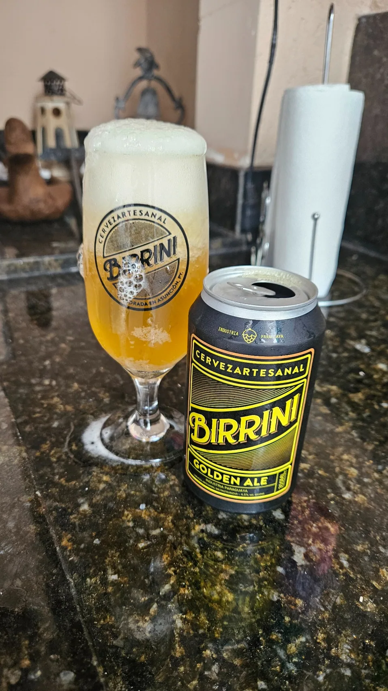
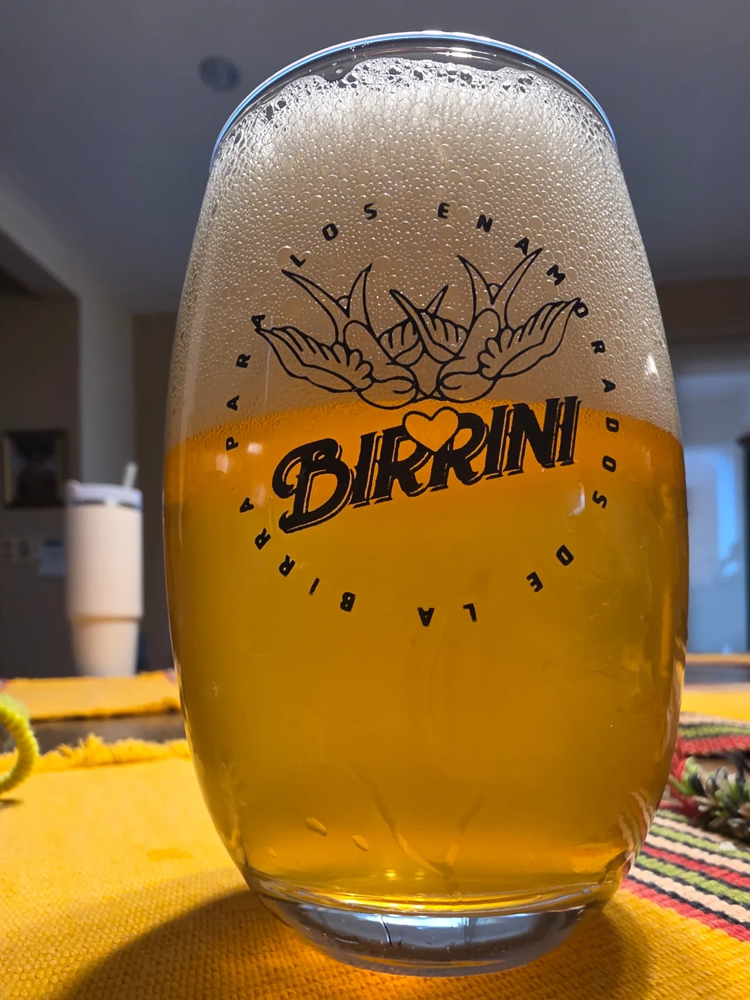
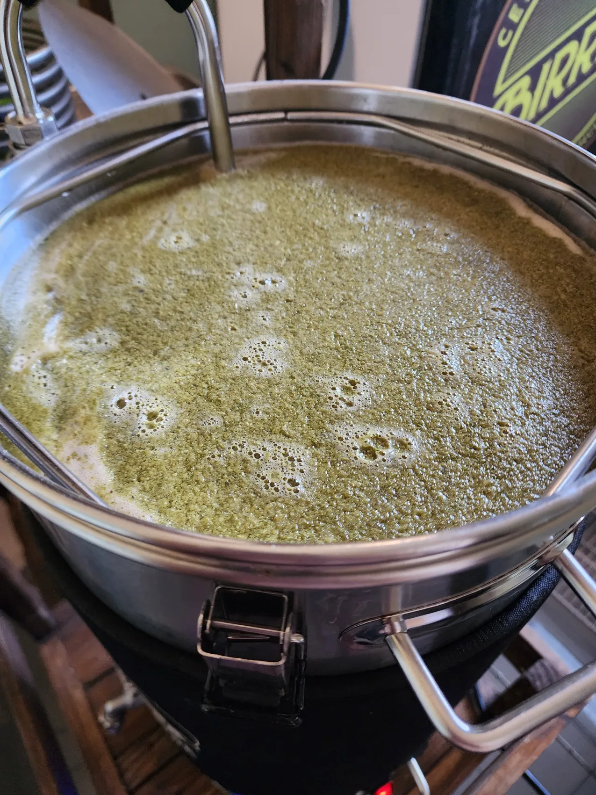

EL UNIVERSO CERVECERO.
La cerveza empezó como una curiosidad. Terminó convirtiéndose en uno de mis grandes universos.
Soy cervecero artesanal, fundador y creador de Birrini, un proyecto que nació de las ganas de hacer cerveza, compartirla y construir algo propio alrededor de ella.
Entre recetas, maltas, lúpulos, fermentaciones y experimentos, descubrí que hacer cerveza es una mezcla fascinante de ciencia, creatividad y paciencia. Y que siempre hay algo nuevo por aprender.
Esa curiosidad también dio vida a Cocinando Birra, un espacio donde comparto conocimientos y experiencias con quienes quieren descubrir cómo se hace una cerveza desde cero.
Porque la cerveza no es solamente lo que hay dentro de un vaso. También son las historias, las personas y todo lo que sucede alrededor.


